Free to forkNo licence and no copyright claim: build this game under your own name, or lift one idea from it. Why?
Game overview
RoomSpace is a 2D side-view universe built out of thousands of rooms. Each room is a little terrarium with its own climate: its own gravity, air, water, heat, light and materials. Everyone in it, you included, is a floppy physics ragdoll who can push against gravity and fly anywhere in the room, like a fish in an aquarium.
Rooms connect through doors in their walls, the way Super Metroid's rooms do, and they influence each other: water, heat and gas seep from one into the next. Rooms add up to planets, planets to star systems, and those to galaxies and a universe, all generated from how matter was spread out, never from biome templates. Matter is never created or destroyed in RoomSpace, only transformed, so a desert you flood stays flooded and a forest you burn stays ash until something grows back.
Moment to moment it's a physics combat and tinkering game: grab anything, throw it, rip it, fly into it at full speed. Around that, a campaign generator tells a new story in the same persistent universe every time, and what happened in the last campaign is still there in the next. It grew out of Floppy Heroes, a small ragdoll gladiator game, and the mobile headquarters motherships of Mobile Suit Gundam.
Target audience
Players who love physics toys and open worlds: Cortex Command, Terraria, Starbound, Minecraft, No Man's Sky. People who have reached the end of one of those and found the world frozen behind them, or the story running down a funnel the rest of the game never needed.
They want to play with a world, not watch one, and to come back to it for years.
Mouse and keyboard. The basics are only WASD and two buttons; the extra keys (limb selection, flipping items, tearing) are there for players who want finer control.
Game's purpose
Play, movement and silliness: the tactile joy of a floppy body that does unexpected things.
Freedom and power: fly anywhere, grab anything, reshape a room, a planet, a region.
Variety and understanding: a universe whose every place has a reason for being the way it is, and that reason can be found.
Meaning: what you did stays done. The design's own words: make memories.
It avoids draining autonomy (no scripted bottleneck) and rest (stop anywhere; only one room is ever running).
Core concept
Even the most open sandbox worlds usually end in a finite scripted story: a final boss, credits, and a world that either freezes or has to be thrown away for a new one.
RoomSpace turns that around. The universe is the platform and the story is yours: each campaign has a beginning, middle and end, generated in the same universe, and its outcomes carry over into the next.
Places are built from forces and materials, so the universe never runs out of situations to put a ragdoll in.
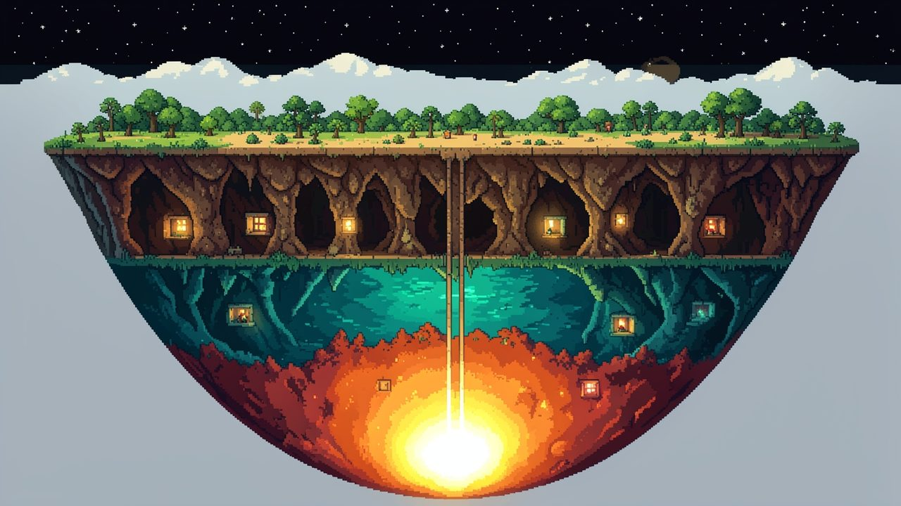
"A planet is a cup of rooms: orbit at the rim, a core at the bottom, and every layer of sky, ground and sea in between."
Lore and story
RoomSpace has no single fixed story, on purpose. It has a universe with natural laws, and every campaign is a story told inside it. What stays the same is the shape of the place.
A universe of rooms
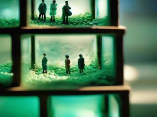
The universe is a grid of nodes, each about a hundred cubic kilometres of space, rock, sea or sky. At the heart of each node is its core room, the place you actually play in: between 9 and 30 metres across, with a door on each side. A room stands for the remarkable spot in a much bigger area, the way a single screen in an old adventure game stands for a whole forest. The rest of the node is its atmosphere and a reserve of matter, seen through the room's walls in the background.
Doors are airlocked and the real distance between two rooms can be huge, so the rooms themselves never bleed into each other. Their atmospheres do.
Cup worlds
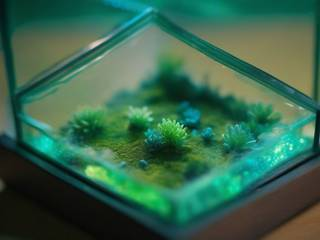
In side view, a planet is a cup world: a cup of rooms that descends from orbit through the high atmosphere, the clouds, the surface, the underground or the sea, and the mantle, down to a core room at the bottom. The surface row loops around the planet, and shafts branch down from it to meet at the core.
The core decides what kind of planet it is: whether it attracts or repels certain materials, how strong its gravity is and which way it points, how often it sends quakes up through the rock. Cups come in many shapes, from narrow wells and wide bowls to multi-lobed worlds with a core in each lobe. There are even Aethers, negative-mass cups that open downward with their core at the top, and pocket worlds, where a core has sunk into space like a weight on a rubber sheet.
Out in space, the grid is seen from above, split into regions, star systems, galaxies and superclusters.
The shape of everything
The universe holds 131,072 rooms, nested like this:
The universeSixteen universe quadrants.
A universe quadrantSixteen galaxy quadrants.
A galaxy quadrantSixteen star cluster quadrants.
A star cluster quadrantThirty-two places: planets, stations, ships or stretches of local space.
A roomOne node's core room, 9 to 30 metres across, where the ragdolls are.
Only the rooms you actually visit need to be filled in, so the universe can grow later by adding quadrants without changing a single room.
Already in motion
The universe doesn't start at zero. Its matter was spread out by several big bangs, gathered into galaxies, stars and planetary cores, and along the way people built districts: buildings, caves, fortresses and ships, anchored into the nodes they stand in. Some of those districts have since launched and flown off as ships, leaving bare docking struts behind. Bangs and crunches are a normal part of a region's life, so somewhere a sector is always being born and another is collapsing.
Your goal right now
That depends on the campaign. You might be building up a people against hostile factions, chasing a legend as a hero who keeps coming back, terraforming dead worlds into gardens, or hunting something that shouldn't exist. Whatever it is, it has a clear end, and the universe will still be there afterwards with your mark on it.
Controls and interface
You don't walk your character around; you push its body. WASD applies force to the torso in eight directions, and the arms and legs flop along behind it. The hands reach toward the mouse pointer, and pointing a hand or a held item somewhere also nudges the whole body that way, so aiming and moving blend into one floaty motion.
Body
W A S D
Push your body in any of eight directions, against any gravity
Shift
Dash: boost and turn your whole body into a weapon
Shift on a wall
Hold to charge a push-off; leave the wall and it fires you the other way
W / S lying
Hold W to stand up; hold S to slump, tap to crouch, double-tap to go limp
F
Mirror turn: face the other way, the limbs catch up
Hands
Mouse
The hands reach toward the pointer
Left click
Grab, use, fire; hold to crush or to pull
Right click
Aim, reach and rotate the torso; swing to add speed to a throw
Q
Hold to pull your hands apart: tear whatever they're holding
T
Tap to drop, tap while swinging to toss, hold to charge a throw
X
Flip a held item 90°, double-tap for 180°
Gear
Tab
Hold for the radial menu: reload, previous or next set, empty your hands; keep holding for stats
R
Reload or cycle
C
Limb selection: pick which hand acts
V
Hands together on one item, or each on its own
Z
Switch a hand off, so it stays put
View and travel
Wheel
Zoom from 25% to 600%
Right click
Hold toward a screen edge to pan the camera
E + direction
Warp out through an exit, in rooms that allow it
Esc
Pause: the camera freezes and a ghost cursor marks your aim
The radial menu opens around your character and its layout is chosen for panic: on foot, reload is on top and "empty your hands" at the bottom; in a vehicle the two swap, so a frantic press right after bailing out never throws away your gear. Holding it a little longer shows what you carry, each item's ammunition and health, and your own condition. Everything stays usable during a mirror turn, and a turn can be cancelled halfway.
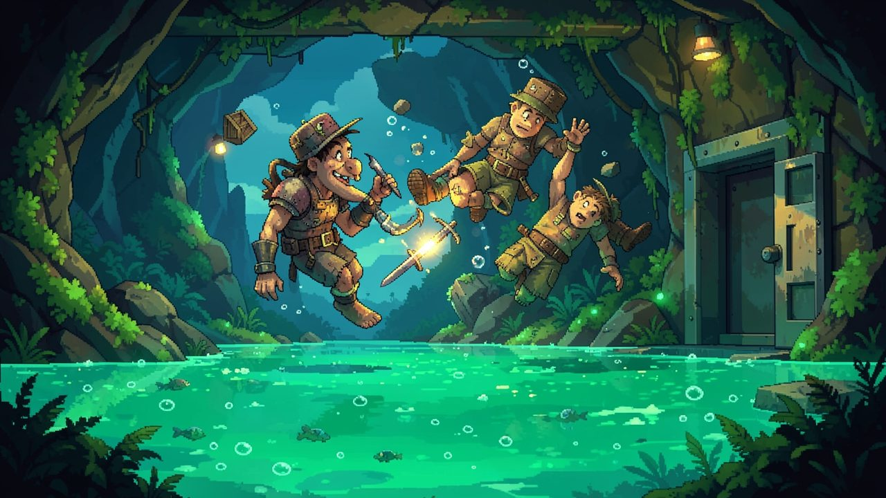
"Bumping into a wall never hurts. Damage only happens when it's meant: a dash, a swing, a charged throw, a shot."
Game layers
01 · Moment-to-moment
One room, one situation
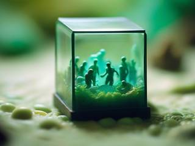
You float into a room and it's a situation: up to sixteen characters, the items lying around, the terrain, the climate. A flooded cave with two scavengers fighting over a crate. A zero-gravity hangar where everything drifts. A desert surface where the heat is cooking your rifle.
You deal with it with your body and whatever is in reach: grab a rock and throw it, rip the gun out of someone's hands, dash through a crowd, cut a hole in the terrain, open a vent and let the room flood. The physics does the rest, often in ways nobody planned.
02 · Low metagame
A generated campaign
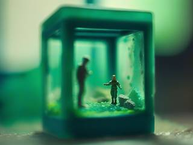
A campaign is a story with a clear beginning, middle and end, generated in the universe you already know, using old places and new ones, old foes and new. It might stay inside one room complex, cross one cup world, or reach across a whole sector.
Its job can be anything the design's catalogue holds: clear pests out of a station with as little damage as possible, reduce a fortress to fine rubble, hunt a monster, infiltrate a megastructure, explore and help people Knytt-style, seed a barren world. Living side events from the rest of the universe can surprise it, sidetrack it or twist it on the way.
03 · High metagame
The universe and your trail through it
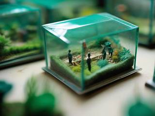
The universe is the infinite part. When a campaign ends, the generator writes a new one in the same place, and everything you did carries over: the rooms you terraformed, the districts you launched or emptied, the people who now like or hate you.
The design's focus here is "make memories, focus on the past, not the future". The game documents your trail of victories, destruction and change, and celebrates or mourns it with you. Even the camera follows the idea, drifting toward where you've been rather than where you're going. A mothership of your own (see Features) is the home you carry with you between campaigns.
04 · Practical game flow
A free Sunday
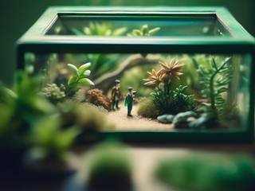
The design compares a session to waking up on a free Sunday and deciding what kind of day it'll be: relaxing, exciting, adventuring, working, or just pondering. Where you travel decides what kind of play you get.
Every door is a natural place to stop. Only the room you're in is running, so the game can save the moment you quit and pick up in that same room, mid-campaign, whenever you return. Nothing in the universe moves on without you.
Game modes
RoomSpace is a platform first, so its "modes" are ways of framing the same universe. The design leaves open whether each becomes a separate game or whether they all live together in one omni-game, an infinite campaign generator in one seamless universe, where the mode is simply whatever kind of campaign you're on.
Framing
What you do
Who you are
Conquest
Build up your people and fight hostile factions on the ground, in the air and in space until every threat is gone
An exchangeable hero: when one falls, another of your people carries on
Adventure
Chase grand achievements across the universe
A hero who reincarnates after every death
Engineer and gardener
Terraform and cultivate worlds into a paradise
A builder of climates
Investigator
Uncover the universe's wicked mysteries and face eldritch monstrosities
A bounty hunter and detective
Spirit Mode
Possess ragdoll bodies and tear through rooms of opponents for pure anger relief
An angry spirit with no body of its own
Spirit Mode is the smallest and the loudest. The longer you keep one possessed body alive, the more the spirit warps it, with random mutations, traits, abilities and even allies, until it becomes a kind of demigod; but the warping only works while you're inside, so an abandoned body is weaker than it started. A body that lasts long enough enters a hall of fame with a small screenshot of its last moment, and one that lasts all the way ascends to another dimension instead.
The same engine also fits three small arena games the design names as a first step: one big room with a hundred targets, a Floppy Heroes-style arena of up to nine fighters a side, and a Hotline Miami-style string of small rooms with a few opponents each.
Features and mechanics
The feel of it
Fish in an aquarium
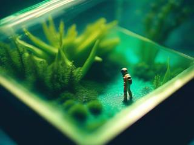
Every living or powered thing can resist gravity. A gravity drive pushes the torso in any direction, so characters fly through every room whatever its gravity, while the limbs flop along behind with their own weight. The torso rotates freely too. It sits somewhere between a top-down and a side-view game.
A dash is a boost that tenses the whole body into a weapon. Press against a wall while holding it and an acceleration charges up; break contact and it fires you off the other way. In gravity, an idle character lies on the floor, can slump or go fully limp, and can even drag itself along the ground by any limb that touches it.
The mirror turn flips the torso instantly, but the limbs keep floating where they were and travel back to their sockets in a time set by their size and mass, so a nimble fighter turns crisply and a hulking one swings around like a ship.
Anything for anyone
Hands that take anything
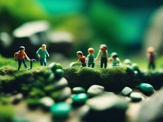
Every character is a core with limbs attached: sensors (a head), auxiliary limbs (legs, tails), manipulators (hands, claws), mounted items (a built-in gun) and vehicle interfaces. The same structure covers humans, dogs, worms and spider-walkers. Any working hand can grab almost anything, and every item works for every character, player and enemy alike, so each new item multiplies what all the others can do.
A grip holds firmly under light force, slips under medium force and breaks under heavy force, depending on how slippery the hand and the object are. Pull with two hands in opposite directions and you rip: tension builds, then damage goes into the joints. Squeeze and you crush. Hold the throw key and you charge a throw that hits as hard as its mass, its speed and your strength allow.
Characters store items on their back, against the core, where they add their weight and can't be hit unless they poke out. Lose every hand and the head takes over as an emergency hand: it can grab with its mouth, bite and eat, though it can't throw, only spit things out.
Honest damage
It only hurts when it's meant
Anyone and anything can slam into walls without harm. Damage happens only when an action is active and voluntary: a dash, a swing, a charged throw, a fired shot. Every object, limb or item, has three limits:
Limit
What wears it down
When it's passed
Hit points
Blunt impacts, blades, fire, poison, electricity
At zero a limb comes off; far below zero it bursts into pieces
Impulse limit
Crushing, focused pressure, hard force impacts
The object bursts
Joint strength
Ripping, dragging, being spun around
The joint lets go
Blunt damage, called charged kinetic pressure, adds up speed, mass, charge time and the target's density, and counts the momentum of both sides: dash into someone standing still for a full hit, into someone fleeing at the same speed for none. Blades deflect or penetrate, get stuck or cut, and do their damage by how far they travel inside the target. An object that has taken a beating grows brittle and bursts sooner.
One system for every gadget
Items built from parts
Every item is assembled from the same few parts: a body, a socket where a hand snaps on, weaponized surfaces that cut or bludgeon, and emission points where projectiles, beams or exhaust come out. Every part can be destroyed on its own. A rifle with a bayonet, a rocket hammer, a flail on free joints, a ripsaw and a crossbow are all the same anatomy in different shapes, so modders can build anything without new code.
Every powered item follows one power chain:
Ammo or fuelThe reserve
ReactorFeeds the charge
CapacitorHolds it ready
LaunchThe shot, the swing, the beam
The taxRecoil, heat and waste
All that stored power is volatility: the more an item holds, the harder it hits and the worse it goes off when broken. A safety rating trades power for containment. Recoil comes out of the same numbers, and a strong enough gun throws your arm back, or you across the room. The ammunition, reactor or capacitor can live in a pack on your back wired to the gun, so a destroyed gun drops the pack safely and a destroyed pack leaves the gun dead.
There's one trigger for everything: press, hold and release cover semi-auto, full-auto, bursts, charge shots and multistage weapons.
The heart of it
Every room a terrarium
Each room has a small interior, the play space, sitting in the vast atmosphere of its node. Every wall panel and door constantly cycles air, liquid and heat between the two, and the room drifts toward its surroundings: a room in a sea node slowly floods, a room in a frozen one cools. Rooms also exchange with their neighbours through shared walls, and whole nodes seep into the nodes beside them.
You can steer it. Wall panels can be insulated to slow or stop the flow, unless the outside is fierce enough to break through. The flow is drawn right on the walls as lines whose count, thickness and colour show how much is passing and what: straight for solids, wavy for liquids, zigzag for gas. That's how players turn deserts into forests and back.
Only the room you're in is fully simulated. Every other room is a dormant file, and a background universe process updates them as needed and sets up events, so entering a room can find it changed by what its neighbours did while you were away. A huge universe stays within what an ordinary computer can run.
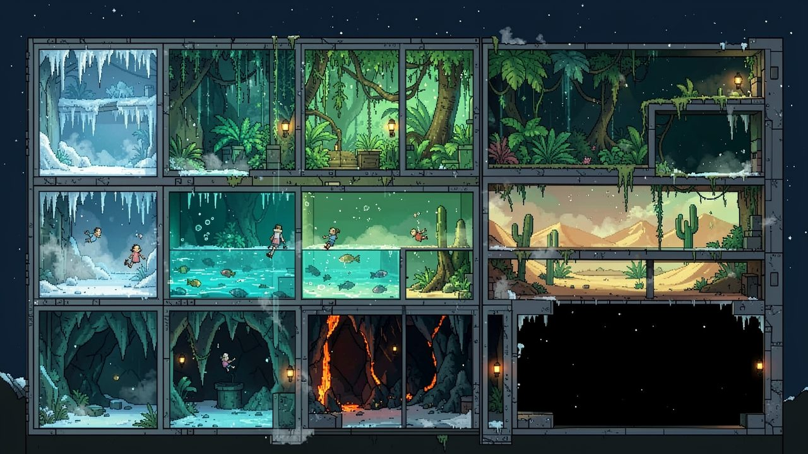
"Rooms never share their interiors, but their air, water and heat seep through the walls into each other."
Room to room
Doors that fold you up
Characters come in many sizes, and some carry ten-metre beams, so every door uses one standard: to pass, a character and everything it holds fold into a 3×3 metre package, items and hands on top, feet and inventory below, in a few frames.
It happens on its own. Touch a door's pack zone with any body part or held item and you fold; inside the zone is a commit line, and until your centre of mass crosses it you can back off and unfold. Once committed, you're carried through, desaturated and untouchable, and you come out the other side with your momentum and rotation intact. A chase keeps its speed from room to room.
Loose objects never wander through doors by themselves; they travel only when someone carries them. Exits always match on both sides (air to air, water to water), and some wall compartments are reverse doors that push their contents into a room: a crate of supplies, a flood, a ceiling hatch full of spiders. The matter for those has to come from somewhere.
Forces, not templates
Nothing is lost, only changed
The generator doesn't place biomes. It starts by spreading all matter through the universe with several big bangs, marks zones from the result, gathers matter into galaxies, systems and planetary cores, and only then renders each node and its room from everything above it. Each level leaves an imprint the next one reads. A room is snowy, swampy or scorched because of where it is, and a player who knows the rules can tell why. Under the hood it's a long chain of if-statements.
The universe obeys equivalent exchange: matter is never created or destroyed. Terrain comes in chunks that cut along a grid or shatter into loose blobs, and blobs give their liquids and gases back to the room's air. Push enough matter into one chunk and it reaches critical density: it burns mass away as heat and radiation and transmutes into heavier elements, and if the cramming outruns that, it collapses into a star, a black hole or a singularity.
Even the game's own safety net follows the law. Anything that ends up outside a wall is pushed back, moved to a free spot, or, as a last resort, turned into a glitch blast at the spot it should be, so its matter isn't lost. Room walls are indestructible, but overload one and it breaks out in a Border Glitch Anomaly of random forces, spawns and mutations before sealing itself again, a little weaker.
Characters with needs
Opponents who feel
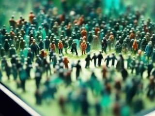
The head is the mind: a character with a head thinks, a headless one just repeats a pattern, like a jellyfish. Thinking characters run on needs, feelings and actions, after Nonviolent Communication. Circumstances move their needs (safety, success, focus, fun), the needs stir feelings (fear, rage, shock, curiosity, impatience, whimsy), and the feelings choose the next likely action: rush, take cover, keep distance, flee, grab the nearest item, spray and pray. Faces show the state, and stats like bravery, patience and whimsy are rolled per character, so simple rules give very individual behavior.
Everyone forms an opinion of everyone in the room: friend or foe, how much of a threat, how much patience is left. Every hit carries its attacker's tag, so victims know exactly who hurt them, and they can tell others: "the player hurt me, they're not our ally any more." Anyone can turn friendly, neutral or hostile toward anyone. Flags like loyal, protect, follow, nemesis, stalker and repulsed shape who sticks to whom.
The mobile headquarters
Districts that launch
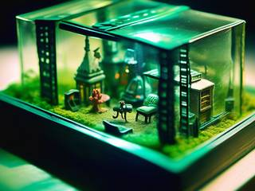
Buildings, caves and fortresses are districts: grids of up to sixteen rooms anchored into a node, the node's backbone. Give a district propulsion that suits the medium (vacuum, gas or liquid), convert all of its rooms for travel, and it can launch as a mobile district: a freighter, a starship, a floating fortress, a moving base. The node it leaves stands bare until some other ship docks there.
Mobile districts travel node to node, one step north, south, east or west at a time, to a dock point reserved in advance. Every core room has four dock points at its corners; a fifth ship at a node is a blockade. Docked ships appear in the room's background, connected by tethers and buoys you can walk through, and a room's air defenses can fire at ships in their own or neighbouring nodes. Boarding actions in ship-to-ship fights are part of it.
A ship can't be blown apart. It can only be sterilized: stripped of air, people and systems down to its bare frame. Only nullware, the weapon tier above antimatter, can erase one. That's the fantasy the design was written for: a group of people travelling together on an epic adventure in a big machine that is also their home.
Trivia
Strong Opinion Ragdolls is a campaign idea in the notes. Everyone in the universe gets a random name and belongs to a group with strong opinions about some mundane preference. Each campaign opens with a random character yelling a preference question at you; answering one way makes everyone on the other side furious, and "nothing" comes in polite, indifferent and hostile flavors, all of which make someone angry. If nobody from the offended side is in the first room, a few of them crash through the wall anyway: "I heard you talking like I wouldn't find out!"
The design fills two notebooks titled "C2 DEV PROJECT", after Construct 2, the engine first planned for it, plus a spiral notepad of door and room sketches in between. The worst-case room it was budgeted for has sixteen fully armed characters dual-wielding full-auto weapons among fifty destructible rocks, with rain, wind, a gravity well and a flood about to arrive.
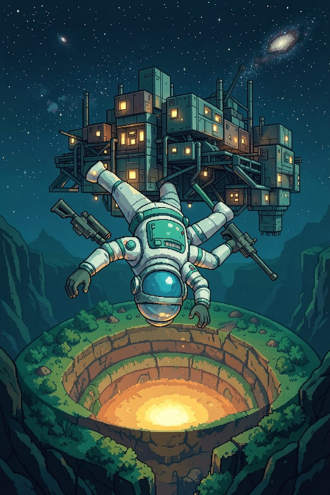
A keeper's welcome
RoomSpace: Terrarium Ragdoll Universe
Your universe has 131,072 rooms. Each one comes with its own weather, its own gravity, its own residents, and opinions about you that will change.
Float in. Grab what's lying around. Flood the cave, cool the desert, throw the crate, launch the fortress and fly it to the next star. When the story ends, another one begins in the same place, and the place remembers.